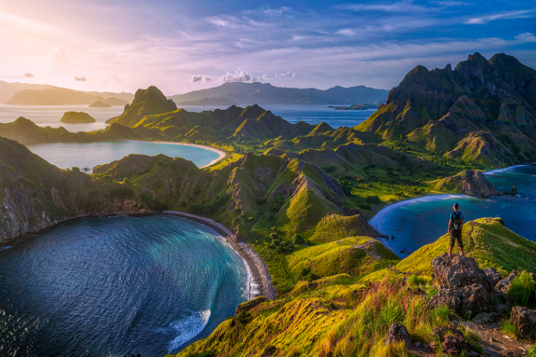

Info Jual Beli di Bogor dan sekitarnya
pemandasngan alam

Pemandangan alam adalah keindahan alam yang dapat dilihat dan dinikmati oleh manusia melalui indra penglihatan, terutama mata. Pemandangan alam mencakup berbagai elemen alami seperti pegunungan, hutan, sungai, danau, pantai, serta fenomena alam lainnya. Pemandangan alam juga bisa mencakup elemen buatan manusia yang terintegrasi dengan alam, seperti bangunan atau jalan di pedesaan.
pemandangan pantai
 Pemandangan pantai adalah keindahan alam yang terlihat di daerah tepi laut, yang meliputi hamparan pasir, laut, dan elemen-elemen lain seperti ombak, langit, dan tumbuhan pantai. Pemandangan ini menawarkan suasana yang menenangkan dan seringkali menjadi daya tarik wisata
Pemandangan pantai adalah keindahan alam yang terlihat di daerah tepi laut, yang meliputi hamparan pasir, laut, dan elemen-elemen lain seperti ombak, langit, dan tumbuhan pantai. Pemandangan ini menawarkan suasana yang menenangkan dan seringkali menjadi daya tarik wisata
Pemandangan pantai adalah keindahan alam yang terlihat di daerah tepi laut, yang meliputi hamparan pasir, laut, dan elemen-elemen lain seperti ombak, langit, dan tumbuhan pantai. Pemandangan ini menawarkan suasana yang menenangkan dan seringkali menjadi daya tarik wisata